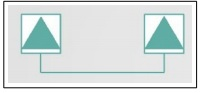

Questão 1 · Agentes etiológicos · 4000129679O etilismo crônico, DPOC, idade avançada e permanência em UTI são fatores que, mais provavelmente, causam pneumonia por:
A estreptococos.
B estafilococos.
C klebsiella.
D actinobacter
Questão 2 · Introdução · 4000129678O tumor pulmonar benigno mais frequente é o:
A hamartoma.
B lipoma.
C fibroma.
D leiomioma.
Questão 3 · Pediatria · Laringites · 4000129677Qual a causa mais comum de obstrução de vias aéreas superiores em crianças?
A Trauma.
B Reação anafilática.
C Introdução de corpo estranho.
D Laringotraqueobronquite.
Questão 4 · Teste do coraçãozinho · 4000129676Um dos exames de triagem neonatal é o teste do coraçãozinho, que deve ser realizado
A em todos os recém-nascidos.
B entre 24 e 48 horas de vida, antes da alta hospitalar.
C no membro superior esquerdo e no membro inferior direito.
D quando as duas medidas de saturação são maiores do que 93%.
Questão 5 · Quadro Clínico · 4000129675Leia o caso clínico a seguir. Lactente com 11 meses de idade, sem febre ou história de doença prévia, é levado pelo pai ao pronto-socorro, com relato de que brincava junto com o irmão de cinco anos num quarto de brinquedos em sua casa, sem supervisão contínua de um adulto, quando o pai – que é médico generalista – ouviu tosse persistente, seguida de estridor e broncoespasmo. Ao chegar no quarto, o pai também observou que a criança estava cianótica. Nesse caso, qual é a principal hipótese diagnóstica?
A Envenenamento.
B Crise asmática.
C Ingestão acidental de corpo estranho.
D Laringotraqueobronquite bacteriana.
Questão 6 · Classif icação de Prof undidade das Queimaduras · Pediatria · 4000129674Leia o caso clínico a seguir. Criança de cinco anos é levada pela mãe ao pronto-socorro com choro incontrolável, devido a queimadura em antebraço esquerdo. Após examinar a criança – que não parou de chorar –, o pediatra informa à mãe que realmente houve uma queimadura, limitada ao epitélio, sem bolhas, mas com eritema, calor e dor local. Nesse caso, qual a classificação da queimadura?
A Primeiro grau.
B Segundo grau.
C Terceiro grau.
D Quarto grau.
Questão 7 · Apresentação Clínica · Pediatria · 4000129673Leia o caso clínico a seguir. Lactente de nove meses, após atualização vacinal, inicia quadro progressivo de cólica abdominal intermitente, vômitos e evacuação com sangue. Com isso, é levado à pediatra, que solicita radiogra a de abdome. Na radiogra a é observado deslocamento das alças intestinais para o hipocôndrio esquerdo e ausência de ar em hipogástrio, sem outras alterações. Mesmo assim, é solicitada ultrassonografia (US) abdominal. Com o resultado da US, confirma-se o diagnóstico de:
A apendicite aguda.
B intussuscepção intestinal.
C má rotação intestinal com volvo.
D hérnia inguinal encarcerada.
Questão 8 · Divertículo de Meckel · Pediatria · 4000129672Leia o caso clínico a seguir. Menina de um ano e dez meses é levada ao pronto-socorro com história de cólica abdominal leve e progressiva e, presença de sangramento vivo nas fezes. É então avaliada pelo pediatra e, posteriormente pelo cirurgião pediátrico, que fazem hipótese diagnóstica que indica procedimento cirúrgico imediato. Durante o procedimento, o cirurgião faz outro diagnóstico, que é:
A torção de ovário.
B divertículo de Meckel.
C hérnia encarcerada.
D apendicite aguda.
Questão 9 · Emergências Pediátricas · Pediatria · 4000129671Leia o caso clínico a seguir. Adolescente ingeriu grande quantidade de benzodiazepínico, na tentativa de se matar. Porém, seu pai a encontrou caída, inconsciente, mas com vida, no chão do seu quarto, ao lado de algumas caixas da medicação. Rapidamente, a levou ao pronto-socorro. O pediatra, sabendo destas informações, deve prescrever:
A Naloxone.
B Gluconato de cálcio.
C N-acetilcisteína.
D Flumazenil.
Questão 10 · Sumário dos Tóxicos e Antídotos · Intoxicações Exógenas · 4000129670Leia o caso clínico a seguir. A mãe, inadvertidamente, enquanto falava ao celular, pegou um solvente na dispensa de sua casa (pensando ser água mineral), colocou-o na mamadeira e deu-o ao seu lho lactente. Logo em seguida (ainda sem ver o que tinha dado) ela observou sonolência excessiva, cianose, hipotermia e bradicardia, levando-o imediatamente ao prontosocorro, onde o pediatra fez diagnóstico de intoxicação exógena. Nesse caso, deve ser prescrito ao lactente:
A glucagon.
B bicarbonato de sódio.
C etanol a 10%.
D octreotida.
Questão 11 · Pediatria · Amamentação Aleitamento Materno · 4000129669O colostro é secretado nos primeiros dias após o nascimento do bebê. E tem na sua constituição, em relação ao leite maduro:
A mesma quantidade de proteínas e lipídeos e mais imunoglobulinas.
B mais proteínas, menos lipídeos e menos imunoglobulinas.
C mais proteínas e lipídeos e menos imunoglobulinas.
D menos proteínas e mais lipídeos e imunoglobulinas.
Questão 12 · Pediatria · Amamentação Aleitamento Materno · 4000129668No aleitamento materno,
A o leite de mães de recém-nascidos a termo apresenta a mesma composição do leite das mães de prematuros.
B em regiões muito quentes e secas há a indicação de oferecer água como complemento ao leite materno.
C a concentração de gordura no leite materno é maior no início do que no final de uma mamada.
D há indicação de suplementação de vitamina K e vitamina D ao leite materno, por causa da baixa concentração destes nutrientes nele.
Questão 13 · Pediatria · Amamentação Aleitamento Materno · 4000129667O leite materno confere proteção ativa e passiva contra infecções nas crianças que o recebem. A principal Imunoglobulina (Ig) que atua contra os micro-organismos que invadem ou colonizam superfícies mucosas é a Ig:
A A.
B E.
C G.
D M.
Questão 14 · Pediatria · Síndrome de Edwards · 4000129666Recém-nascido a termo, com crescimento intrauterino retardado (CIUR), apresentando implantação baixa de orelhas, sopro sistólico importante, mãos em garra, microftalmia e insu ciência respiratória é internado na UTI-Neonatal. Dentre outros procedimentos realizados no referido recém-nascido, foi colhido cariótipo. Esta trissomia é conhecida como
A síndrome de Down.
B síndrome de Edwards.
C síndrome de Patau.
D síndrome de Klinefelter.
Questão 15 · Pediatria · Principais síndromes genéticas e neonatais · 4000129665Recém-nascido a termo, com crescimento intrauterino retardado (CIUR), apresentando implantação baixa de orelhas, sopro sistólico importante, mãos em garra, microftalmia e insu ciência respiratória é internado na UTI-Neonatal. Dentre outros procedimentos realizados no referido recém-nascido, foi colhido cariótipo. Nesse caso qual é o resultado do cariótipo?
A Trissomia 21.
B Trissomia 18.
C Trissomia 13.
D Trissomia 9.
Questão 16 · Pediatria · Endocardite · 4000129664Criança com diagnóstico de endocardite infecciosa deve receber tratamento antibiótico durante
A sete dias.
B quatorze dias.
C vinte e um dias.
D vinte e oito dias ou mais.
Questão 17 · Dermatologia · Dermatomicoses · Pediatria · 4000129663As infecções fúngicas superficiais acometem frequentemente as crianças. Dentre elas, a tinea cruris
A acomete principalmente a população adolescente.
B ocorre mais comumente nas regiões interdigitais.
C tem um maior tropismo pelas crianças do sexo feminino.
D necessita de tratamento tópico e sistêmico para sua completa resolução.
Questão 18 · Larva migrans · Pediatria · 4000129662A larva migrans cutânea, ou bicho-geográfico acomete muitas crianças e tem como característica:
A é causada pelas larvas do Necator Americanus.
B a contaminação ocorre pela ingestão de alimentos mal lavados.
C as lesões são encontradas em qualquer área do corpo.
D é uma patologia com lesão na pele, sem prurido.
Questão 19 · Diagnóstico dif erencial · Pediatria · Doença de Kawasaki · 4000129661Leia o caso clínico a seguir. Criança com febre de até 40 ºC há mais de cinco dias, com um nódulo indolor palpável em região cervical anterior, com cerca de 0,5 cm de diâmetro e sem sinais ogísticos locais, apresentando também, há um dia, exantema micropapular difuso, principalmente em tronco e edema de extremidades doloroso. Nesse caso, qual é a hipótese diagnóstica?
A Doença de Kawasaki.
B Mononucleose infecciosa.
C Escarlatina.
D Sarampo.
Questão 20 · Pediatria · Endocrinologia pediátrica · 4000129660Leia o caso clínico a seguir. Menina de doze anos de idade, previamente hígida, iniciou quadro de di culdade de concentração, queda no rendimento escolar, sudorese excessiva, aumento do diâmetro cervical, emagrecimento e tremores finos de extremidades. Nesse caso, qual é a hipótese diagnóstica?
A Diabetes mellitus tipo I.
B Transtorno do déficit de atenção e hiperatividade.
C Hipertireoidismo.
D Leucemia mieloide crônica.
Questão 21 · Classif icação histológica · 4000129659Leia o caso clínico a seguir. Uma mulher de 65 anos tem apresentado aumento do volume abdominal há seis meses. No exame físico, há distensão abdominal com ondas de líquidos. A ultrassonogra a revela a presença de massa ovariana cística de 10 cm à direita. A massa foi removida cirurgicamente. Ao exame macroscópico, a massa removida é cisto unilocular repleto de líquido claro, e as projeções papilares se estendem à luz central do cisto. O exame microscópico mostra que as papilas são cobertas por células cuboides atípicas que invadem o estroma subjacente. Nesse caso, qual é o diagnóstico mais provável?
A Cistadenoma seroso.
B Cistadenocarcinoma seroso.
C Disgerminoma.
D Tumor mulleriano misto maligno
Questão 22 · Etiologia · 4000129658Leia o caso clínico a seguir. Uma adolescente de 14 anos começou a menstruar há um ano. Agora, tem sangramento uterino anormal, com ciclos menstruais que duram entre dois e sete dias, com intervalos de duas a seis semanas. A quantidade de sangramento varia de um gotejamento mínimo a um uxo muito intenso. No exame físico, não há achados dignos de nota. A ultrassonogra a pélvica não aponta anormalidades. Nesse caso, a maior probabilidade de produzir tais achados é:
A pólipo endometrial.
B ciclos anovulatórios.
C gravidez ectópica.
D carcinoma endometrial.
Questão 23 · Populaçãoalvo e intervalo · 4000129657Em relação ao rastreamento de câncer de colo uterino, o Ministério da Saúde recomenda que mulheres
A histerectomizadas não necessitam ser rastreadas.
B que nunca tiveram atividade sexual não necessitam ser rastreadas.
C na pós-menopausa não necessitam ser rastreadas.
D com HIV não necessitam de rastreio diferente que as demais mulheres.
Questão 24 · Rastreamento mamográf ico · 4000129656Em relação ao rastreamento de câncer de mama na rede pública, o Ministério da Saúde recomenda a realização da mamografia em mulheres com idade
A entre 40 e 65 anos, anualmente.
B entre 50 e 65 anos, anualmente.
C entre 50 e 69 anos, a cada dois anos.
D acima de 50 anos, a cada dois anos.
Questão 25 · Terapia hormonal · 4000129655Leia o caso clínico a seguir. Mulher de 52 anos, menopausada há dois anos, com fogachos que causam grande desconforto noturno, prejudicando o sono. Apresenta hipertensão arterial e diabetes mellitus (com controle irregular há cerca de 10 anos). Além disso, na dopplerfluxometria das carótidas, observa-se placas ateromatosas bilateralmente. Diante desse quadro, a conduta mais indicada é:
A a terapia hormonal via oral.
B a venlafaxina ou desvenlafaxina.
C a terapia hormonal via transdérmica.
D os esteroides sexuais bioidênticos.
Questão 26 · Terapia hormonal · 4000129654A terapia hormonal na menopausa
A é a mais efetiva para diminuir os fenômenos vasomotores.
B é a melhor opção para tratar os sintomas gênito-urinários, quando realizada via oral.
C não é efetiva para prevenir perdas ósseas e fraturas por fragilidade.
D aumenta a incidência de câncer colorretal (TH combinada)
Questão 27 · Tratamento · 4000129653O ácido tranexâmico tem sido utilizado no tratamento de sangramentos uterinos anormais. O seu mecanismo de ação consiste em
A aumentar o fibrinogênio.
B reduzir a fibrinólise.
C acelerar a degradação de fibrina.
D ativar o sistema fibrinolítico.
Questão 28 · Tratamento · 4000129652Leia o caso clínico a seguir. Mulher de 30 anos, com quadro clínico de sangramento uterino anormal rebelde ao tratamento clínico, mostra à ultrassonogra a um mioma com cerca de 50% de penetração no miométrio, base de 1/2, ocupando a cavidade endometrial, no terço superior da parede lateral esquerda do útero e com cerca de 3 cm o maior diâmetro. Nesse caso, de acordo com a classificação PALM-COEIN (Federação Internacional de Ginecologia e Obstetrícia), o tratamento de escolha, é a
A histerectomia por laparotomia.
B miomectomia por laparotomia.
C miomectomia por laparoscopia.
D miomectomia antecedida por análogo do GnRH.
Questão 29 · Diagnóstico · Quadro clínico · 4000129651Consiste em critério maior para o diagnóstico de doença inflamatória pélvica aguda a
A dor hipogástrica.
B massa pélvica.
C temperatura ≥ 38 ºC.
D proteína C reativa positiva.
Questão 30 · Cancro mole · 4000129650O agente etiológico do cancroide é:
A a Chlamydia trachomatis.
B a Klebsiela granulomatis.
C o Mycobacterium ulcerans.
D o Haemophilus ducrey
Questão 31 · Inf ecções sexualmente transmissíveis · Epidemiologia · 4000129649Para que se interrompa a cadeia de transmissão das infecções sexualmente transmissíveis (IST), é fundamental que os contatos sexuais das pessoas infectadas sejam tratados. Segundo o Ministério da Saúde, são consideradas parcerias sexuais, para fins de comunicação, aqueles com as quais a pessoa com sífilis latente tenha se relacionado sexualmente
A na última semana.
B no último mês.
C nos últimos seis meses.
D no último ano.
Questão 32 · Cervicites · 4000129648Leia o caso clínico a seguir. Gestante no segundo trimestre de gravidez refere corrimento amarelado e sangramento nas relações sexuais, há cerca de um mês. Ao exame especular, verifica-se cérvice uterina hiperemiada, com sangramento ao se passar a espátula e corrimento de aspecto mucoide e purulento. Diante deste quadro, a hipótese diagnóstica mais provável e o tratamento de escolha são, respectivamente:
A cervicite – associação ceftriaxona e metronidazol.
B cervicite – associação azitromicina e ceftriaxona.
C cervico-vaginite – associação azitromicina e ceftriaxona.
D cervico-vaginite – associação ceftriaxona e metronidazol.
Questão 33 · Dopplervelocimetria Doppler · Obstetrícia · 4000129647A síndrome hipercinética consiste em alterações fetais que podem ser identi cadas no doppler da artéria cerebral média fetal, encontrada nos casos de
A pré-eclâmpsia grave.
B síndrome HELLP.
C anemia fetal.
D cardiopatias congênitas.
Questão 34 · Sistema cardiovascular e hematopoiético · 4000129646São exemplos de modificações no sistema de coagulação materna durante a gestação:
A aumento da proteína S Livre e diminuição da proteína C.
B aumento do fator de Von Willebrand e diminuição do Fator II.
C aumento do fibrinogênio e do fator de Von Willebrand.
D diminuição dos fatores VIII e antitrombina III.
Questão 35 · Complicações · Obstetrícia · 4000129645A causa mais comum de necrose cortical aguda dos rins no ciclo gravídico puerperal é:
A o descolamento prematuro de placenta.
B a placenta prévia.
C a pré-eclâmpsia.
D a síndrome HELLP.
Questão 36 · Rotura prematura de membranas ovulares RPM · Obstetrícia · 4000129644A detecção da proteína PAMG-1 (alfa 1 microglobulina) humana por imunocromatogra a é muito útil, em obstetrícia, para o diagnóstico de
A rotura prematura da placenta.
B infecção cervical por clamídia.
C predição do trabalho de parto prematuro.
D malformações cromossômicas fetais.
Questão 37 · Hemorragias pós parto HPP e rotura uterina · 4000129643O parto transpélvico taquitócico está associado a sangramento puerperal, principalmente por
A retenção placentária.
B hipotonia uterina.
C inversão uterina.
D laceração de trajeto.
Questão 38 · · 4000129642Conceitos f undamentais óbito materno óbito por causa materna causas obstétricas diretas e causas obstétricas indiretas Em nosso meio, as principais causas de mortalidade materna e neonatal são, respectivamente:
A hemorragias e prematuridade.
B hemorragias e sepse neonatal.
C pré-eclâmpsia e prematuridade.
D infecção puerperal e sepse neonatal.
Questão 39 · Diagnóstico · Controle glicêmico · 4000129641Leia o caso clínico a seguir. Gestante com início do pré-natal na 32ª semana tem os seguintes resultados do teste de tolerância oral a glicose: (75 g): jejum = 90 mg/dL; 1ª hora = 188 mg/dL; 2ª hora = 150 mg/dL. Diante deste resultado, o diagnóstico e o tratamento inicial são, respectivamente:
A diabetes gestacional, dieta e atividade física.
B diabetes gestacional e hipoglicemiante oral.
C diabetes mellitus, dieta e atividade física.
D diabetes mellitus, dieta e insulina.
Questão 40 · Diagnóstico · Obstetrícia · Tipos de gestações múltiplas · 4000129640Em gestações gemelares, a corinicidade é definida pelo momento em que ocorre a clivagem do ovo. Na gestação monocoriônica e monoamniótica, a clivagem ocorre
A até o 4º dia.
B do 4º ao 8º dia.
C do 8º ao 12º dia.
D a partir do 12º dia.
Questão 41 · Malária · 4000129639A malária é uma protozose que representa um grave problema de saúde pública no mundo. Sobre os aspectos clínicos e epidemiológicos que implicam no seu desenvolvimento,
A a doença não confere imunidade esterilizante.
B o período de paroxismos deve-se ao ciclo esporogônico do plasmódio na hemácia.
C o quadro clínico independe do plasmódio infectante.
D a doença é causada pela picada da fêmea anofelina contendo gametócitos na saliva.
Questão 42 · Neurotuberculose e Tuberculose Meníngea · Meningites · 4000129638Leia o caso clínico a seguir. A.M.S., masculino, de 38 anos, saudável até então, vem apresentando febre baixa e cefaleia há três semanas e apresenta, há 12 horas, náuseas e vômitos em jato. Teste rápido de HIV negativo. Ao ser avaliado na UPA, apresentava confusão mental, rigidez de nuca e sinal de Brudzinski presente. O liquor foi retirado, apresentava-se turvo e, ao exame, apresentou os seguintes parâmetros: celularidade: 680 cel/mm³/88% linfomonucleares; proteína: 165 mg% (N = 15-50) e glicose: 25 mg% (N = 45- 100). Bacterioscopia e culturas em andamento. Nesse caso, a partir dos dados clínicos epidemiológicos, o diagnóstico mais provável é meningite
A estafilocócica.
B meningocócica.
C tuberculosa.
D viral.
Questão 43 · Acne · 4000129637No uso da isotretinoína para o tratamento de acne,
A esse medicamento é mais bem absorvido pelo trato gastrointestinal quando ingerido com refeição gordurosa, sendo seu uso proibido em menores de 16 anos pelo risco de hepatotoxicidade.
B o uso concomitante de penicilinas aumenta o risco de desenvolvimento de hipertensão intracraniana benigna, ou pseudotumor cerebral, se apresentando clinicamente com náuseas, vômitos e visão turva.
C esse fármaco tem indicação nas formas graves da doença e nas formas resistentes ou recorrentes aos tratamentos habituais ou naqueles pacientes muito afetados psicologicamente.
D em alguns pacientes pode ocorrer o agravamento (flare-up) da acne no final da terapia, sendo contraindicado o uso de corticoterapia sistêmica nesses casos.
Questão 44 · Diagnóstico · Dermatologia · Apresentação clínica · 4000129636Leia o caso clínico a seguir. Homem branco, de 63 anos, relata surgimento de lesão no sulco nasogeniano há dois anos, indolor e sangrante aos mínimos traumas. O médico assistente descreveu a lesão como sendo uma pápula de aspecto perolado com telangiectasias na superfície, sendo que o exame anatomopatológico identi cou células tumorais basaloides com núcleos periféricos em paliçada. Nesse caso, o diagnóstico do paciente é:
A ceratoacantoma.
B carcinoma basocelular variante papulonodular.
C melanoma amelanótico.
D carcinoma espinocelular.
Questão 45 · NOB 0193 · 4000129635Na Norma Operacional Básica - SUS 01/1993, foram estabelecidas normas e procedimentos reguladores do processo de descentralização da gestão das ações e serviços de saúde. Dentre essas normas e procedimentos,
A foram criadas as comissões intergestoras bipartite e tripartite.
B foi criado o Programa Saúde da Família.
C foi elaborado o Plano Diretor de Regionalização.
D foram criados o Pacto pela Vida e o Pacto de Gestão.
Questão 46 · Medicina Preventiva · Políticas de Saúde para Populações Específ icas · 4000129634De acordo com o Manual sobre o Cuidado à Saúde junto à População em Situação de Rua (Ministério da Saúde, 2012), uma pesquisa relevante realizada com a população em situação de rua no Brasil apontou que
A o sexo feminino era o que predominava.
B o principal motivo de saída para a rua eram as desavenças com os familiares.
C a maioria sabia ler e escrever.
D a maioria não exercia alguma atividade remunerada.
Questão 47 · Financiamento do SUS · Política Nacional de Atenção Básica PNAB · 4000129633De acordo com a Portaria n. 2.436 do Ministério da Saúde, de 21 de setembro de 2017,
A o financiamento da Atenção Básica deve ser bipartite e com detalhamento apresentado pelo Plano Municipal de Saúde garantido nos instrumentos conforme especificado no Plano Estadual e Municipal de gestão do SUS.
B o financiamento federal para as ações de Atenção Básica deverá ser composto de recursos per capita, por recursos que estão condicionados à implantação de estratégias e programas da Atenção Básica, por recursos condicionados à abrangência da oferta de ações e serviços, dentre outros.
C o recurso per capita será transferido semestralmente, de forma regular e automática, do Fundo Nacional de Saúde aos Fundos Municipais de Saúde, com base num valor multiplicado pela população do município.
D os valores dos incentivos financeiros para as equipes de Saúde da Família implantadas serão prioritários e superiores, transferidos a cada três meses, tendo como base o número de equipes de Saúde da Família registrados no sistema de Cadastro Nacional vigente no mês atual ao da respectiva competência financeira.
Questão 48 · Ferramentas de abordagem f amiliar · 4000129632Dentre os instrumentos de abordagem familiar que um médico de família e comunidade pode fazer uso, um deles é uma forma de registro no qual é desenhada a rede social e inclui todos os indivíduos com quem interage uma determinada pessoa ou família, sendo ainda o campo relacional total que é reconhecido e quali cado como significativo. Esse instrumento pode ser sistematizado por um diagrama formado por três círculos concêntricos, divididos em quatro quadrantes. O instrumento descrito refere-se:
A ao ecomapa.
B ao genograma.
C ao mapa de rede social.
D à entrevista familiar.
Revisar: possível letra faltando em enunciado
Questão 49 · Genograma · 4000129631Analise o genograma a seguir. O genograma apresentado corresponde a um casal:

A homoafetivo masculino.
B homoafetivo feminino.
C heteroafetivo.
D biafetivo.
Questão 50 · Programa Mais Médicos Programa Médicos pelo Brasil · 4000129630Ao se comparar a Lei n. 12.871, de 22 de outubro de 2013, que instituiu o Programa Mais Médicos com a Lei n. 13.958, de 18 de dezembro de 2019, que instituiu o Programa Médicos pelo Brasil, uma das modi cações significativas é que o documento de 2019 prioriza o seguinte objetivo:
A viabilizar a provisão de médicos em locais de difícil provimento ou de alta vulnerabilidade.
B fortalecer a atenção primária à saúde no Brasil.
C aprimorar os critérios do processo seletivo para médico de família e comunidade e para tutor médico.
D desenvolver a formação de médicos especialistas em Medicina de Família e Comunidade no Brasil.
Questão 51 · Medicina Preventiva · Vigilância Epidemiológica · 4000129629Com relação à Covid-19, de acordo com a publicação de 5 de agosto de 2020 do Ministério da Saúde, intitulada Guia de Vigilância Epidemiológica, Emergência de Saúde Pública de Importância Nacional pela Doença pelo Coronavírus 2019,
A o período de incubação é estimado entre um a 21 dias, com mediana de nove e dez dias.
B a definição de contato se refere a qualquer pessoa que esteve em contato próximo a um caso confirmado de Covid-19 durante o seu período de transmissibilidade, ou seja, entre dois dias antes e dez dias após a data de início dos sinais e/ou sintomas do caso confirmado.
C para indivíduos com quadro de síndrome gripal com confirmação por qualquer um dos critérios para Covid-19, recomenda-se o isolamento, suspendendo-o após 14 dias do início dos sintomas, desde que passe 48 horas de resolução de febre sem uso de medicamentos antitérmicos e remissão dos sintomas respiratórios.
D para indivíduos com quadro de síndrome respiratória aguda grave com confirmação por qualquer um dos critérios para Covid-19, recomenda-se o isolamento, suspendendo-o após 21 dias do início dos sintomas ou após 14 dias com resultado RT-PCR negativo, desde que passe 24 horas de resolução de febre sem uso de medicamentos antitérmicos e remissão dos sintomas respiratórios, mediante avaliação médica.
Questão 52 · Ensaios comunitários ou Intervenções comunitárias · Medicina Preventiva · Ensaios clínicos · 4000129628Leia o texto a seguir. Um pesquisador desenvolveu um estudo comparando a sintomatologia psiquiátrica dos pacientes com surto esquizofrênico de um serviço especializado no momento da internação com a sintomatologia seis dias após o uso de um novo medicamento que ele acreditava ser e caz para controlar o surto. Como resultado, encontrou uma redução dos sintomas iniciais. Nesse caso, o delineamento desse estudo foi:
A ensaio clínico controlado.
B coorte.
C caso-controle.
D estudo de intervenção não controlado.
Questão 53 · Declaração de óbito DO Atestado de óbito · 4000129627A redução do percentual de óbitos com causas consideradas pouco úteis em saúde pública é um dos principais objetivos do Departamento de Análise da Situação de Saúde da Secretaria de Vigilância do Ministério da Saúde. Ao se deparar com exemplos de preenchimento da Declaração de Óbito, item causas da morte (Parte I), o médico deve considerar como um preenchimento inadequado, dentro do contexto das causas imediatas e antecedentes:
A linha a: edema aguda de pulmão; linha b: insuficiência cardíaca hipertensiva; linha c: cardiopatia hipertensiva; linha d: hipertensão arterial.
B linha a: choque hipovolêmico; linha b: rotura de varizes esofagianas; linha c: hipertensão portal; linha d: esquistossomose mansônica.
C linha a: parada cardiorrespiratória; linha b: insuficiência renal; linha c: choque hemorrágico; linha d: hemorragia.
D linha a: choque séptico; linha b: peritonite aguda; linha c: volvo de sigmoide; linha d: megacolon chagásico crônico.
Questão 54 · Intoxicações Exógenas · Intoxicação por Carbamatos e Organof osf orados · 4000129626Leia a situação clínica a seguir. Um médico da Estratégia Saúde da Família, em zona rural de um pequeno município do interior de Goiás até o m de janeiro de 2020, atendeu um paciente proveniente desse local, que chegou com quadro clínico grave, caracterizado por miose, hipotensão, arritmias cardíacas, insu ciência respiratória, edema agudo de pulmão, pneumonite química, convulsões, alterações da consciência, choque, coma, que poderia ter evoluído para óbito, caso não fosse devidamente atendido. Seguindo os protocolos do Ministério da Saúde do Brasil, a principal suspeita diagnóstica que deve ser levantada é:
A intoxicação crônica por chumbo metálico.
B intoxicação aguda grave por agrotóxicos.
C dengue.
D Covid-19.
Questão 55 · Vigilância Epidemiológica · 4000129625De acordo com o Guia de Vigilância Epidemiológica, Emergência de Saúde Pública de Importância Nacional pela Doença pelo Coronavírus 2019, publicado em 5 de agosto de 2020 pelo Ministério da Saúde, com relação à noti cação da Covid- 19,
A casos suspeitos de síndrome gripal e de síndrome da angústia respiratória grave (SRAG), quando hospitalizados, não precisam ser notificados; contudo, os casos confirmados devem ser notificados imediatamente.
B caso confirmado é o caso suspeito de síndrome gripal e de síndrome da angústia respiratória grave com teste rápido positivo em amostra coletada até o sétimo dia de início dos sintomas.
C a notificação de indivíduos assintomáticos com confirmação laboratorial por biologia molecular ou imunológico de infecção recente por Covid-19 é facultativa.
D os óbitos por SRAG, independente de hospitalização, devem ser notificados no Sivep-Gripe. O registro do óbito também deve ocorrer, obrigatoriamente, no Sistema de Informação sobre Mortalidade.
Questão 56 · Mediana · 4000129624Um tipo de gráfico útil para a descrição de dados, visualização de sua variabilidade e comparação entre diferentes grupos é o gráfico em caixas (boxplot). Para se construir um boxplot, obtêm-se primeiro algumas estatísticas. Entre elas, a mediana, que corresponde
A ao primeiro quartil (Q1).
B ao segundo quartil (Q2).
C ao terceiro quartil (Q3).
D à distância interquartílica (DQ).
Questão 57 · Medicina Preventiva · Tipos de variáveis · 4000129623Em uma análise descritiva, o estado civil de participantes de um estudo é um tipo de variável
A quantitativa discreta.
B quantitativa contínua.
C categórica ordinal.
D categórica nominal.
Questão 58 · Randomização · 4000129622A resposta de um indivíduo a uma terapêutica varia de acordo com suas características pessoais. Assim, para que as diferenças porventura detectadas em um estudo sejam realmente devidas à diferença na eficácia das terapias, é fundamental que os grupos de tratamento e controle sejam comparáveis. Uma maneira adequada de se atingir a comparabilidade é:
A o mascaramento duplo cego realizado pelos pesquisadores, em que os participantes e os examinadores não sabem qual grupo está recebendo a terapêutica em estudo.
B o tamanho da amostra dos participantes, que deve ser grande o suficiente para garantir uma estimativa próxima ao valor real dos resultados.
C a alocação aleatória dos pacientes participantes no experimento aos grupos de controle e de tratamento.
D o cálculo da redução do risco relativo que informa a eficácia da intervenção quando comparada ao controle.
Questão 59 · Medidas de Desempenho de Testes Diagnósticos ou Medidas de Perf ormance de Testes Diagnósticos · 4000129621Valor Preditivo Negativo Pesquisadores que tratam de doenças pulmonares em uma clínica especializada sugeriram um novo teste para detectar câncer no pulmão. Os resultados do estudo são descritos a seguir. Considerando os dados, a probabilidade de um paciente, atendido nessa clínica e que não tenha câncer no pulmão, ter um resultado positivo no teste e o valor da predição negativa são, respectivamente,
A 0,841 e 0,981.
B 0,018 e 0,981.
C 0,841 e 0,092.
D 0,018 e 0,992.
Questão 60 · Estudos de CasoControle · 4000129620Leia o texto a seguir. Um pesquisador oftalmologista de Sydney observou, no primeiro semestre de 1941, vários recém-nascidos com catarata congênita. As características pouco usuais dos casos o levaram a procurar uma explicação que envolvesse as mães. Na pesquisa, veri cou que todas foram acometidas de rubéola em uma grande epidemia que havia atingido a Austrália no ano anterior, exatamente durante o primeiro trimestre de gestação que resultaram no nascimento das crianças com catarata congênita (Gregg, 1941). O estudo apresentado é delineado como:
A caso-controle.
B estudo de casos.
C coorte retrospectiva.
D ecológico.
Questão 61 · Fobia Social ou Transtorno de Ansiedade Social · 4000129619Clara é uma mulher de 20 anos que, apesar de sempre ter tido um bom histórico escolar, decidiu não entrar na faculdade por causa de sua ansiedade. Foi levada ao psiquiatra pela sua mãe e, durante a consulta, estava relutante em falar de si mesma. Dizia estar constantemente tensa e só em casa sentia-se à vontade. Tinha muita di culdade de conversar com pessoas fora do seu círculo familiar, geralmente por começar a suar profusamente e ter taquicardia. Ficava particularmente ansiosa na companhia de pessoas da mesma idade ou de pessoas que ela considerava “muito importantes”. Tinha poucos amigos com quem se sentia à vontade. Tremia ao ter que assinar ou preencher formulários quando estava sendo observada. Tinha muita vontade de namorar e sair com os amigos. As pessoas do seu círculo de convivência a achavam muito doce e educada. No entanto, evitava sair com eles para restaurantes, pois começava a passar mal (tendo tontura, palpitações, fôlego curso) quando tentava comer com pessoas estranhas por perto que lhe pudessem observá-la. Era vista pelas outras pessoas como “caseira”, não por gostar de car em casa o tempo todo, mas pelo constante medo de passar vexame na frente de outras pessoas. Clara negou abuso de drogas e negou eventos traumáticos que antecedessem o surgimento dos sintomas. A abordagem terapêutica ideal para essa paciente é:
A prescrição de risperidona 2 mg e uso de técnicas de dessensibilização sistemática.
B prescrição de paroxetina 20 mg e técnicas de reprocessamento cognitivo.
C prescrição de clomipramina 75 mg e técnicas de exposição.
D psicoterapia em monoterapia pela ausência de benefício com medicamentos.
Questão 62 · Transtornos de Personalidade · Fobia Social ou Transtorno de Ansiedade Social · 4000129618Transtornos Ansiosos Clara é uma mulher de 20 anos que, apesar de sempre ter tido um bom histórico escolar, decidiu não entrar na faculdade por causa de sua ansiedade. Foi levada ao psiquiatra pela sua mãe e, durante a consulta, estava relutante em falar de si mesma. Dizia estar constantemente tensa e só em casa sentia-se à vontade. Tinha muita di culdade de conversar com pessoas fora do seu círculo familiar, geralmente por começar a suar profusamente e ter taquicardia. Ficava particularmente ansiosa na companhia de pessoas da mesma idade ou de pessoas que ela considerava “muito importantes”. Tinha poucos amigos com quem se sentia à vontade. Tremia ao ter que assinar ou preencher formulários quando estava sendo observada. Tinha muita vontade de namorar e sair com os amigos. As pessoas do seu círculo de convivência a achavam muito doce e educada. No entanto, evitava sair com eles para restaurantes, pois começava a passar mal (tendo tontura, palpitações, fôlego curso) quando tentava comer com pessoas estranhas por perto que lhe pudessem observá-la. Era vista pelas outras pessoas como “caseira”, não por gostar de car em casa o tempo todo, mas pelo constante medo de passar vexame na frente de outras pessoas. Clara negou abuso de drogas e negou eventos traumáticos que antecedessem o surgimento dos sintomas. Nesse caso, qual é o provável diagnóstico?
A Transtonro de personalidade antissocial.
B Transtorno de personalidade paranoide.
C Transtorno de ansiedade generalizada.
D Transtorno de ansiedade do tipo fobia social.
Questão 63 · Doença por deposição de pirof osf ato de cálcio CPPD · Quadro clínico · 4000129617Em 2011, o EULAR ( pacientes com doenças por deposição de cristais de pirofosfato di-hidratado de cálcio, definindo quatro tipos de apresentação da doença. Nesse contexto,
A a forma assintomática é a apresentação menos comum, e caracteriza-se pelo achado de condrocalcinose em exame de imagem.
B a forma de artrite aguda caracteriza-se por poliartrite, com dor forte e edema, sendo bastante frequente em indivíduos com menos de 60 anos de idade.
C na forma associada com osteoartrite, observa-se envolvimento de articulações muito usuais na osteoartrite primária, tais como os joelhos e a coluna vertebral.
D na forma de artrite inflamatória crônica, observa-se poliartrite de grandes e pequenas articulações, semelhante à artrite reumatoide.
Questão 64 · Bases imunológicas da Reumatologia · Medicamentos utilizados no tratamento da doenças reumáticas · 4000129616Imunossupressores biológicos Em pacientes com doenças autoimunes, a principal citocina responsável por elevação sérica das proteínas de fase aguda, leucocitose e anemia de doença crônica, e seu respectivo medicamento imunobiológico, é:
A IL-6 – tocilizumabe.
B IL-1 – adalimumabe.
C BAFF – anti-Blys.
D TNF-alfa – abatacepete.
Questão 65 · Manejo clínico e diagnóstico · Pneumologia · Radiograf ia · 4000129615Paciente do sexo masculino, de 42 anos, refere que há 40 dias apresentou quadro de tosse com escarro purulento, febre diária de 38 ºC, dor torácica ventilatório dependente. Fez uso de azitromicina por cinco dias sem melhora. Procurou atendimento médico e realizou exames complementares, conforme descritos a seguir: Hemograma: hemoglobina 13, leucócitos 13.000, bastões 5%, neutrófilo 75% e plaquetas 250.000. Raios X de tórax conforme imagem a seguir. Toracocentese do hemitórax direito: líquido pleural purulento:PH 7,12, glicose 38 mg%, DHL 1.100, predomínio de neutrófilos, aguardando culturas. Qual é o tratamento adequado para esse paciente?

A Esquema antimicrobiano para tuberculose.
B Antibioticoterapia e toracocentese de repetição.
C Antibioticoterapia e observação.
D Antibioticoterapia e drenagem pleural.
Questão 66 · Derrame Pleural · 4000129614Paciente do sexo masculino, de 42 anos, refere que há 40 dias apresentou quadro de tosse com escarro purulento, febre diária de 38 ºC, dor torácica ventilatório dependente. Fez uso de azitromicina por cinco dias sem melhora. Procurou atendimento médico e realizou exames complementares, conforme descritos a seguir: Hemograma: hemoglobina 13, leucócitos 13.000, bastões 5%, neutrófilo 75% e plaquetas 250.000. Raios X de tórax conforme imagem a seguir. Toracocentese do hemitórax direito: líquido pleural purulento:PH 7,12, glicose 38 mg%, DHL 1.100, predomínio de neutrófilos, aguardando culturas. Nesse caso, qual o provável diagnóstico?

A Derrame pleural parapneumônico não complicado.
B Empiema pleural.
C Pneumonia comunitária.
D Tuberculose pleural.
Questão 67 · Quadro Clínico · Neurologia · Tratamento · 4000129613Leia o caso clínico a seguir. Um homem com antecedente de consumo de álcool, queixa-se de piora progressiva de seu estado geral nas últimas duas semanas, além de di culdade para enxergar e quedas frequentes. Perdeu o emprego devido à pandemia e vem consumindo quantidades crescentes de álcool. Está confuso, com alteração do olhar conjugado, nistagmo multidirecional e di culdade em reter informações recentes. Seu exame de ressonância do crânio mostra hiperintensidades bitalâmicas. Qual é o tratamento de urgência para reverter seus sintomas e melhorar o prognóstico?
A Glicose endovenosa contínua.
B Tiamina 500 mg endovenosa, três vezes ao dia.
C Lactulose 30 g, via oral, três vezes ao dia.
D Fenitoína 300 mg endovenosa, uma vez ao dia.
Questão 68 · Neurologia · Investigação Etiológica e Prof ilaxia Secundária · Acidente Vascular Cerebral Isquêmico · 4000129612Para um paciente de 35 anos de idade com acidente vascular cerebral do tipo isquêmico, qual é o padrão-ouro para avaliar presença de forame oval patente?
A Doppler transcraniano com teste de microbolhas.
B Ecocardiograma transesofágico com teste de microbolhas.
C Ecocardiograma transtorácico com teste de microbolhas.
D Angiorressonância magnética de vasos cervicais.
Questão 69 · Investigação · Hemorragia Subaracnoidea HSA · Neurologia · 4000129611Leia o caso clínico a seguir. Uma mulher de 42 anos apresenta quadro súbito de cefaleia intensa e desesperadora, náuseas, vômitos e perda transitória da consciência durante a relação sexual. No momento do atendimento, apresenta-se confusa, com rigidez de nuca e sem déficits motores. Qual é a causa mais provável do quadro clínico desta paciente?
A Hemorragia subaracnoidea.
B Meningite viral.
C Hemorragia intracerebral.
D Hematoma extradural.
Questão 70 · Proteinúria · Nef rologia · 4000129610Uma adolescente de 16 anos descobriu ter proteinúria ortostática (1,2 g/dia). Nesse caso, qual é o risco de desenvolver doença renal no futuro?
A Alto risco.
B Baixo risco.
C O risco só pode ser determinado com biópsia renal.
D Sem risco aumentado.
Questão 71 · Síndrome HELLP · PréEclâmpsia · 4000129609A lesão glomerular conhecida como endoteliose é característica de qual doença?
A Doença por lesões mínimas.
B Síndrome hemolítico-urêmica.
C Pré-eclâmpsia.
D Glomerulopatia membranosa.
Questão 72 · Diagnóstico da policitemia vera PV · 4000129608Leia o caso clínico a seguir. Mulher de 43 anos se apresenta ao pronto-socorro com história de desconforto abdominal progressivo e ganho de peso há três semanas. Ela relata não possuir doenças pregressas e não faz uso de medicamentos. No exame físico, nota-se uma face pletórica. O abdômen está tenso, sensível e moderadamente distendido. Os achados laboratoriais demonstram hemoglobina de 18,7 g/dL, contagem de leucócitos de 9000/µL, contagem de plaquetas de 401.000/ µL, nível de alanina aminotransferase (ALT) de 84 U/L, aspartato aminotransferase (AST) de 107 U/L e nível de bilirrubina total de 0,9 mg/dL. O teste sérico de gravidez é negativo. A ultrassonografia abdominal com doppler demonstra trombose da veia hepática. Qual dos seguintes testes de diagnóstico tem mais probabilidade de estabelecer a causa da apresentação clínica da paciente?
A Pesquisa da mutação JAK2V617F.
B Pesquisa de trombofilias hereditárias.
C Tomografia computadorizada (TC) helicoidal do abdômen.
D Citometria de fluxo para expressão de CD55 e CD59.
Questão 73 · Trauma Esplênico · 4000129607Leia o caso clínico a seguir. Mulher de 72 anos é admitida na unidade de emergência após acidente automotivo. A história médica pregressa inclui insu ciência renal leve, brilação atrial, hipertensão e diabetes. Ela está atualmente tomando lisinopril, varfarina e metformina. Os valores dos resultados dos testes laboratoriais incluem: contagem de leucócitos 12.000/µL com diferencial normal, hemoglobina 7,4 g/dL, plaquetas 256.000/µL e INR 4,86. A esplenectomia emergencial é realizada após laceração esplênica. A paciente recebeu sete unidades de glóbulos vermelhos de doadores ABO compatíveis e seis unidades de plasma fresco congelado. Sua evolução no pós-operatório imediato é normal e ela está recebendo uidos intravenosos contínuos. Oito horas depois, a enfermeira relata dispneia e taquicardia progressivas. Ela não tem febre ou expectoração. O exame revela uma saturação de oxigênio de 90% pela oximetria de pulso, frequência cardíaca de 106 BPM, pressão arterial de 160/90 mmHg, distensão venosa jugular, 2+ edema bilateral de membros inferiores, sem sensibilidade na panturrilha e fígado palpável. A radiogra a de tórax demonstra pequeno derrame pleural bilateral e infiltrados hilares. Qual é a próxima etapa mais apropriada no manejo desse paciente?
A Antibióticos de amplo espectro.
B Anticoagulação empírica e angiotomografia computadorizada.
C Furosemida.
D Esteróides.
Questão 74 · Hepatologia · Gradiente de albumina soroascite GASA · 4000129606Considerando o diagnóstico diferencial de ascite, o achado de gradiente de albumina soro-ascite (GASA) ≥ 1 é detectado em casos de:
A cirrose hepática.
B carcinomatose peritoneal.
C tuberculose peritoneal.
D colagenoses.
Questão 75 · Intervenção f armacológica · Endocrinologia · 4000129605No tratamento da mulher transgênero, o uso de estrógeno associado a antiandrogênico proporciona bons resultados, principalmente após 6-12 meses de terapia. Das características a seguir, qual não apresenta resposta ao tratamento?
A Diminuição no crescimento de pelos faciais.
B Alteração da voz.
C Redistribuição da gordura corporal para padrão feminino.
D Aumento das mamas.
Questão 76 · Drogas antidiabéticas não insulina · Tratamento medicamentoso · 4000129604Medicações com ef eito sensibilizador de insulina Leia o caso clínico a seguir. Paciente do sexo masculino, de 43 anos, procurou endocrinologista devido a quadro de diabetes descompensado apesar do uso de insulina nph - 60 unidades, duas vezes ao dia, associado a alogliptina-25mg/dia. Tem diagnóstico de HAS e apneia do sono, porém sem tratamento. Ao exame, altura: 1,69 m; peso: 98,7 kg; IMC: 34.55 kg/m²; cintura abdominal: 111 cm. FC: 88 BPM. PA: 155/98 mmHg. Presença de acantose nigricans axilar e acrocórdons na região cervical. Exames laboratoriais com glicemia de jejum: 185 mg/dL e glicemia pós-prandial: 205 mg/dL. Hemoglobina glicada de 9,7%. Peptídeo C jejum: 3,5 ng/mL. Com o objetivo de amenizar o quadro de resistência insulínica do paciente, quais drogas teriam efeito direto na melhora da sensibilidade insulínica?
A Análogo de GLP1 e metformina.
B Inibidor de SGLT2 e pioglitazona.
C Inibidor de SGLT2 e análogo de GLP1.
D Metformina e pioglitazona.
Questão 77 · Diagnóstico · 4000129603Leia o caso clínico a seguir. Mulher de 35 anos procurou cardiologista para avaliar hipertensão arterial, detectada pela primeira vez no pronto-socorro há poucos dias, quando apresentou quadro de ansiedade associado a cefaleia e sudorese. Durante o exame físico, foram constatados: hipertensão arterial (PA: 175/115 mmHg) com taquicardia (FC: 108 BPM). Em uso de amitriptilina – 75 mg/dia. Feitas hipóteses diagnósticas de feocromocitoma e transtorno de ansiedade. Nesse caso, qual a melhor conduta inicial para confirmação diagnóstica de feocromocitoma?
A Solicitar dosagem de ácido vanil mandélico (VMA) na urina 24 horas.
B Solicitar cintilografia com metaiodobenzilguanidina.
C Solicitar metanefrinas e normetanefrinas na urina de 24 horas, após suspender amitriptilina por 14 dias.
D Solicitar PET-CT com 68GA-DOTATATE ou 18F-FDG.
Questão 78 · Fibratos · 4000129602O uso de bratos, associado a medidas não farmacológicas, para hipertrigliceridemia maior que 500 mg/dl, tem recomendação e nível de evidência:
A IA.
B IIaB.
C IIaC.
D IIbC.
Questão 79 · Cardiologia · Prevenção de tromboembolismo · 4000129601Leia o caso clínico a seguir. Homem de 44 anos, obeso, fumante e dislipidêmico, apresenta um episódio de brilação atrial após ingesta excessiva de bebida alcoólica. De acordo com a classificação de CHA2DS2-VASc, qual o tratamento adequado para prevenção de fenômeno tromboembólico?
A Orientação e acompanhamento.
B Aspirina 100 mg, ao dia.
C Warfarina.
D Rivaroxabana 20 mg, ao dia.
Questão 80 · BNP e NTproBNP · 4000129600Qual medicamento, utilizado no tratamento da insuficiência cardíaca, aumenta os níveis séricos de BNP?
A Inibidores da ECA.
B Betabloqueadores.
C Diuréticos.
D Sacubitril/Valsartana.
Questão 81 · Conf irmação Diagnóstica · Cirurgia · 4000129599Por causa do isolamento que o retroperitônio (RP) fornece, os tumores podem crescer até dimensões consideráveis sem detecção ou sintomas. Independentemente de a massa ser identi cada por detecção incidental em exames de imagem de rotina para outras causas ou pelos sintomas do paciente, é importante compreender as próximas etapas mais apropriadas na avaliação. Quase exclusivamente, a tomogra a computadorizada (TC) do tórax, abdômen e pelve representa a modalidade de imagem inicial ideal para caracterizar massas que ocorrem dentro do RP. A TC na avaliação de massas de RP,
A permite o detalhamento da lesão por meio da demonstração de tamanho, densidade interna, presença de calcificações, relação com órgãos adjacentes e infiltração de bordas. Com o realce do contraste intravenoso, a identificação de envolvimento duodenal, do intestino delgado e do cólon pode ser descrita.
B no cenário de tumores que contêm gordura e a densidade das unidades Hounsfield positivas avaliadas, podem identificar áreas cujas características podem ser patognomônicas em certas condições, como lipossarcomas, angiomiolipomas e mielolipomas.
C apresenta grande vantagem, pois tem capacidade de discriminar a origem histológica ou o potencial maligno com base apenas na aparência radiográfica. A ressonância magnética agrega valor ao discriminar o grau de envolvimento vascular quando os vasos centrais são distorcidos, quando o paciente não pode realizar TC.
D realizada por emissão de pósitrons serve para avaliar a viabilidade de massas residuais pós-quimioterapia no seminoma avançado/metastático para RP, avaliação de risco e estimativa do grau de tumor/subtipos histológicos de lipossarcomas de RP e estadiamento e adaptação ao tratamento em certos subtipos de linfoma.
Questão 82 · Nef rologia · Pielonef rite · 4000129598A infecção em pacientes com pielonefrite aguda pode ser subdividida em (1) infecção não complicada que não justi ca hospitalização, (2) infecção não complicada em pacientes com trato urinário normal que estão enfermos o su ciente para justi car hospitalização para terapia parenteral e (3) infecção complicada associada com hospitalização, cateterismo, cirurgia urológica ou anormalidades do trato urinário. É fundamental determinar se o paciente tem uma ITU não complicada ou complicada, pois anormalidades significativas foram encontradas em 16% dos pacientes com pielonefrite aguda. Nesse sentido, em pacientes com pielonefrite
A não complicada presumida que serão tratados ambulatorialmente, a avaliação radiológica inicial geralmente pode ser adiada. No entanto, se houver qualquer razão para suspeitar de um problema ou se o paciente não tiver acesso razoável a exames de imagem ou se não houver mudança na condição, recomenda-se a ureteroscopia para descartar cálculos ou obstruções.
B complicada conhecida ou suspeita, a TC fornece uma avaliação excelente do estado do trato urinário e da gravidade e extensão da infecção. A ampicila oral (500 mg quatro vezes ao dia) por sete dias é uma terapia de primeira linha apropriada em pacientes que não necessitam de hospitalização, onde a prevalência de resistência uropatogênica ao antibiótico na comunidade não excede a 10%.
C se uma dose parenteral única inicial de antibiótico for escolhida, um agente de ação prolongada, como 1 g de ceftriaxona ou uma dose consolidada de 24 horas de um aminoglicosídeo, pode ser usado como alternativa a uma fluoroquinolona intravenosa. Fluoroquinolonas orais uma vez ao dia, como ciprofloxacina 1000 mg de liberação prolongada por sete dias ou azitromicina 500 mg por cinco dias, também são alternativas razoáveis em pacientes não hospitalizados, nos quais os padrões de resistência na comunidade são baixos.
D o Sulfametazaxol + trimeetoprima oral (160/800 mg [1 comprimido de dupla força] duas vezes ao dia por 14 dias) é um agente apropriado se o organismo for conhecido por ser sensível; se a suscetibilidade for desconhecida, uma dose intravenosa inicial de um antibiótico parenteral de ação prolongada, como 1 g de ceftriaxona ou uma dose consolidada de 24 horas de um aminoglicosídeo, é recomendada.
Revisar: possível letra faltando em enunciado
Questão 83 · Tratamento Cirúrgico das Doenças Inf lamatórias Intestinais · 4000129597Leia o caso clínico a seguir. Paciente portador de doença de Crohn, em uso de budesonida e mesalazina há cerca de oito anos, apresentando quadros de dor e distensão abdominal recorrente, náuseas, vômitos, hipoproteinemia, anemia e perda de peso. Realizado exame de enterorressonância magnética, que identi cou tratar-se de forma estenosante jejunoileal com brose e dilatação a montante. Nesse caso, qual é a melhor opção terapêutica?
A Tratamento cirúrgico, uma vez que se trata de um paciente que perdeu a janela de oportunidade para terapia medicamentosa.
B Introdução urgente de imunossupressão com azatioprina devido à sua rápida ação terapêutica.
C Introdução de terapia biológica com anti-TNF e imunossupressor em combo terapia, uma vez que se trata de paciente virgem para terapia biológica.
D Terapia com corticoide, imunobiológicos e desconsiderar tratamento cirúrgico, pois deve-se operar pacientes com doença de Crohn apenas se eles estiverem com obstrução ou perfuração intestinal.
Questão 84 · Conduta na Retocolite Ulcerativa · 4000129596Leia o caso clínico a seguir. Paciente de 30 anos, do sexo masculino, portador de retocolite ulcerativa, forma pancolônica em uso de mesalazina 4,8 g ao dia, que necessitou de corticoterapia por três vezes no último ano. Nesse caso, a melhor indicação de tratamento é:
A manutenção do corticoide por tempo prolongado para evitar recaídas.
B aumento das doses de mesalazina acima de 5 gramas ao dia.
C introdução de azatioprina ou 6 mercapto purina.
D introdução de ciclosporina pela comodidade terapêutica.
Questão 85 · Inf ectologia · Derrame pleural tuberculoso · 4000129595Na investigação de um derrame pleural, há indicativo de tuberculose, se o líquido pleural apresentar:
A relação proteína sérica / proteína pleural > 0,5; ADA > 15 U/L; células mesoteliais > 5%.
B eosinófilos > 30%; células mesoteliais > 5%; proteínas < 2,5 g/dL.
C linfócitos > 65%; ADA < 30 U/L; células mesoteliais < 5%.
D proteínas > 4,5 g/dL; ADA > 40 U/L; células mesoteliais < 5%.
Questão 86 · Indicações · 4000129594Para os pacientes sob ventilação mecânica e entubação traqueal prolongadas, é pretendido com a confecção de traqueostomia cervical:
A facilitar a aspiração das vias aéreas e diminuir o risco de broncoaspiração.
B facilitar o desmame da ventilação mecânica e prevenir estenose glótica.
C diminuir a secreção de muco e melhorar a relação FiO₂/PaO₂.
D proteger a via aérea na obstrução laríngea e melhorar a relação PaO₂/FiO₂.
Questão 87 · Avaliação PréOperatória · Avaliação Cardiovascular · Avaliação de Risco · 4000129593Entre os índices que avaliam o risco cirúrgico utilizados na avaliação pré-operatória encontram-se os índices de
A Goldman e o de Destky.
B Lee e o de Cormack.
C Cormack e o de Malampatti.
D Malampatti e o de Goldman.
Questão 88 · Analgesia Perioperatória · Dor e Analgesia · Opioides · 4000129592Qual dos opioides apresentados a seguir possui maior potência analgésica?
A Morfina.
B Fentanil.
C Sufentanil.
D Remifentanil.
Questão 89 · Cirurgia de Cabeça e Pescoço · 4000129591A mandíbula exerce papel fundamental na mastigação. Sua origem embrionária está ligada diretamente
A à crista ou placa neural.
B ao placódio.
C à membrana bucofaríngea.
D ao arco visceral I (antigo arco braquial).
Questão 90 · Cicatrização de Feridas · Cirurgia · 4000129590É exemplo de cicatriz instável:
A queloide.
B cicatriz atrófica.
C úlcera de pressão com cicatrização por segunda intenção.
D estrias.
Questão 91 · Cistos · 4000129589Cisto de Baker ou cisto poplíteo é a formação cística na região posteromedial do joelho. Corresponde a um aumento de volume da bursa do músculo semimembranáceo. Essa condição clínica
A apresenta-se na maioria dos casos de forma assintomática.
B acomete pacientes com idade entre 15 e 25 anos.
C está relacionada comumente com doença extra-articular.
D apresenta incidência na população geral de 5%.
Questão 92 · Epif isiólise do Fêmur Proximal · 4000129588A epi siólise proximal do fêmur constitui alteração da relação anatômica normal entre a cabeça e o colo femoral em pacientes com a linha de crescimento aberta. O escorregamento acontece na camada hipertró ca da placa epi sária femoral proximal. Essa afecção é mais comum
A na raça branca.
B em pacientes maiores de 16 anos de idade.
C no quadril direito dos meninos.
D em pacientes obesos.
Revisar: possível letra faltando em enunciado
Questão 93 · Tratamento Cirúrgico do Megaesôf ago Avançado · 4000129587Tratamento Cirúrgico do Megaesôf ago NãoAvançado Qual a melhor alternativa de tratamento para paciente portador de megaesôfago chagásico grupo III de Rezende, com 40 anos, sem comorbidades?
A Cirurgia de Nissen.
B Esofagogastroplastia.
C Cirurgia de Serra-Dória.
D Cirurgia de Heller-Pinotti.
Questão 94 · Atendimento e Triagem em Cenários de Catástrof e · Cirurgia · 4000129586Leia o caso clínico a seguir. Você é convocado para uma área de triagem segura em um shopping, onde várias pessoas são feridas em um tiroteio. O atirador se matou. Você examina rapidamente a situação, determina as condições dos pacientes e estabelece as prioridades para avaliação posterior. Nesse caso, qual paciente tem prioridade para a avaliação posterior?
A PACIENTE A – Um jovem está gritando: "Por favor, me ajude, minha perna está me matando!".
B PACIENTE B – Uma jovem mulher tem cianose e taquipneia e está respirando ruidosamente.
C PACIENTE C – Um homem mais velho está deitado em uma poça de sangue com a perna esquerda da calça encharcada de sangue.
D PACIENTE D – Um jovem está deitado de bruços e não se move.
Questão 95 · Cirurgia · Coledocolitíase · 4000129585Leia o caso clínico a seguir. Paciente do sexo feminino, de 34 anos, submeteu-se a cirurgia bariátrica (bypass gástrico) há quatro meses. Há quatro dias evoluiu com dor abdominal tipo cólica em hipocôndrio direito, vômitos e icterícia. Realizou colangioressonância, com diagnóstico de colelitíase e coledocolitíase. Com relação a esse caso, qual o tratamento mais adequado?
A Colecistectomia videolaparoscópica seguida de CPRE.
B CPRE seguida de colecistectomia videolaparoscópica.
C Colecistectomia convencional e coledocostomia com dreno de Kehr.
D Colecistectomia com exploração da via bilar por videolaparoscopia.
Questão 96 · Tratamento da Diverticulite Complicada · 4000129584A conduta preferencial a ser adotada em um paciente de 70 anos com diverticulite aguda, Hinchey IV, é:
A Cirurgia de Hartmann.
B Colectomia total.
C Sigmoidectomia com anastomose primária.
D Colonoscopia descompressiva.
Questão 97 · Tratamento Cirúrgico da Obesidade · 4000129583A obesidade é uma preocupação da saúde mundial. No Brasil, esta condição afeta cerca de 15% da população. Atualmente, o tratamento cirúrgico é método que comprovadamente apresenta melhores resultados no tratamento da obesidade mórbida. Existem várias técnicas cirúrgicas reconhecidas e validadas cienti camente, apresentando resultados semelhantes. Segundo o Conselho Federal de Medicina, qual é o procedimento cirúrgico proscrito para o tratamento da obesidade mórbida?
A Bypass gástrico.
B Bypass jejuno-ileal.
C Derivação biliopancreática.
D Gastrectomia vertical.
Questão 98 · Trauma Torácico · Cirurgia · 4000129582Leia o caso clínico a seguir. Vítima de queda de grande altura (cinco metros), do sexo masculino, de 38 anos, dá entrada no pronto socorro com quadro de dor torácica, FC de 126 BPM, taquipneia, turgência de jugulares e sudorese. Na inspeção, observa-se área de escoriação e hematoma na região anterolateral do hemitórax direito ao nível do quinto espaço intercostal, com crepitação significativa. A ausculta revela ausência do murmúrio vesicular no hemitórax direito e ritmo cardíaco regular em dois tempos. Nesse caso, qual é o diagnóstico mais provável?
A Pneumotórax hipertensivo.
B Tamponamento cardíaco.
C Hemotórax maciço.
D Tórax instável.
Questão 99 · Cirurgia Vascular · Cirurgia · 4000129581Leia o caso clínico a seguir. Um menino de cinco anos é levado pela mãe ao consultório devido ao aparecimento de veias proeminentes na sua coxa direita no último ano. O menino não tem queixas e é muito ativo. Durante a consulta, observa-se um aglomerado de varicosidades de localização atípica próximo do que sua mãe identi ca como uma marca de nascença. As pernas são iguais em comprimento e circunferência e não se observam alterações da coloração, calor local, massas ou frêmitos. Nesse caso, qual o primeiro teste diagnóstico deve ser solicitado:
A flebografia.
B arteriografia.
C ecodoppler.
D angiorressonância.
Revisar: possível letra faltando em enunciado
Questão 100 · Cirurgia Vascular · Cardiologia · 4000129580A anomalia clinicamente significativa mais comum do sistema vascular é Respostas: 1 12 23 34 45 56 67 78 89 100
A canal arterial patente.
B anomalia da veia renal esquerda.
C síndrome do encarceramento poplíteo.
D artéria ciática persistente.